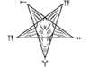
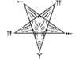

| Símbolos Ocultistas | |||
|---|---|---|---|
| Nome | Imagem | Origem | Nota |
| Hexagrama | Hebraico |
|
|
| Pentagrama | .svg.png) |
Mesopotamia |
|
| Sigillum Dei |  |
Europeia, Idade média |
Um diagrama mágico, composto por 2 círculos, um Pentagrama, e 3 Heptagramas, e está rotulado com o nome de D'us e seus anjos. |
| Olho da Providência |  |
Maçônico |
O Olho de D'us em um triângulo, representando a Santa Trindade, e rodeado por raios de luz, representando sua onisciência. |
| Rosacruz |


|
Rosacruz / Ordem Hermética da Golden Dawn | Um símbolo mágico, composto por uma cruz com uma rosa no centro, associado a Christian Rosenkreuz, o fundador da Ordem Rosacruz. |
| Baphomet | Templários / Alquimia |
Um ídolo, representando um ser com cabeça de bode, asas de anjo, e corpo humano, com uma tocha entre os chifres, e uma mão apontando para cima, e outra para baixo. A Imagem de Baphomet foi criada por Eliphas Levi, em 1856, e representa o equilíbrio entre o bem e o mal, o masculino e o feminino. Baphomet é um Símbolo Alquímico, que não representa Satan ou o Diabo, e por isso não deve ser adorado, pois nada mais é, do que um símbolo. |
|
| Selo / Sigilo de Baphomet |

 

|
Ordem Ocultista Francesa, Joy of Satan |
Símbolo oficial da Igreja de Satan, fundado por Anton Szandor LaVey, em 1966. As letras em hebraico, ao redor do pentagrama, significam "Leviatã", a serpente do caos, e "Lúcifer", o portador da luz. |
| Selo de Salomão | Hebraico / Goetia | Um anel atruido ao Rei Salomão, era usado para controlar demônios. É comum em tradições judaicas e esotéricas. | |
| Heptagrama | |||